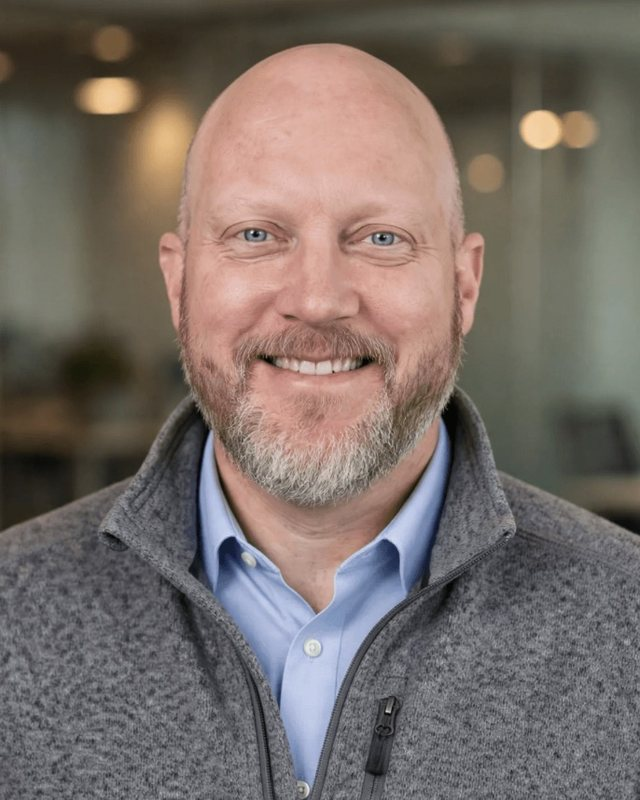

Agile transformation
Assessing where an organization is today and building a practical roadmap to sustainable agile ways of working.

Agile transformation leader
I’m Chris Bogdewic—an experienced technology leader who blends hands-on engineering knowledge, agile coaching, and practical program leadership. I help organizations make better decisions, improve delivery, and build systems that can actually scale.
About
I started my career as a developer, building systems in Java, JavaScript, SQL and ColdFusion. That hands-on background still influences how I lead today: I understand how teams actually work, what creates friction, and where good process can reduce chaos.
Since then, I’ve coached teams and led programs across federal and commercial environments, helping organizations move from fragmented work to steady execution. My work has centered on agile transformation, software delivery, and helping people make better decisions with less confusion.
I hold a B.S. in Computer Engineering from Virginia Tech. Outside of work, I’m a family man who enjoys sports, the outdoors, guitar, music, and good conversation. I’m humble, patient, and value understanding before judgment—qualities I try to bring to every team and project.
Expertise
Assessing where an organization is today and building a practical roadmap to sustainable agile ways of working.
Helping Scrum Masters, Product Owners and delivery teams sharpen practices from backlog refinement to retrospectives.
Driving complex programs with clear plans, honest status, and risk management that leaders can trust.
Aligning multiple teams around shared goals through planning, leadership structure, and disciplined execution.
Journey
PioneerTech, Inc.
Ernst & Young
MITRE Corporation · Life Cycle Engineering · Sotera Defense Solutions · Deloitte Consulting
BearingPoint · TKC Global
Credentials
Recognition
20 awards recognizing delivery on national security, health and data programs.
Issued by the U.S. Department of Homeland Security
MITRE
MITRE
MITRE
MITRE
MITRE
Data pipeline
This pipeline uses FEMA’s Disaster Declarations Summaries dataset, published through FEMA’s public REST API (OpenFEMA). Every day it pulls the full declaration history, validates each record, standardizes the fields, and turns the result into a public summary report.
FEMA’s public REST API (OpenFEMA v2): Disaster Declarations Summaries, covering every federal disaster declaration from 1953 to today.
A daily scheduled Python job calls the REST API over HTTPS, paging through 1,000 JSON records at a time and using standard query parameters to sort by date and request only the fields it needs. Failed requests are retried automatically.
Reject records missing a disaster number, state or date, or with a malformed date. Duplicate rows are collapsed so each disaster is counted once, and nothing is published if no valid records come back.
Trim and standardize text, fill clear defaults for missing incident types or titles, flag which assistance programs were declared, and total declarations by state, incident type and year.
Write the result to a compact JSON summary: the totals plus the 20 most recent declarations, small enough to load instantly in a browser.
Each morning the site is rebuilt with the fresh summary, and the FEMA report page turns it into charts and tables. If FEMA’s API is unavailable, the last good copy stays live.
This is the same approach I bring to delivery work: clear inputs, disciplined checks, consistent transformations, and a reliable final output that can be trusted. See the live FEMA report →
Projects
A Flask web app with live weather, news headlines and sports scores, plus my Health Log and Food & Mood apps.
dashboard.bogdewic.com → Public reportA daily ETL pipeline that pulls FEMA declaration summaries from a public REST API, validates the source data, and publishes a readable public report.
View FEMA report →Delivery pipeline
This homepage and my dashboard each run a small DevSecOps pipeline. Every change is security-checked and tested automatically before it can go live.
Every update starts with my request: content changes, a design tweak or a new section.
Makes the edits on a separate branch so every change is controlled and traceable.
Checks weekly for software security updates and proposes them automatically.
Every change is reviewed as a pull request before it can be merged.
Each change is scanned for secrets, quality issues and broken links before it proceeds.
If any check finds a problem, the change is blocked and the live site stays exactly as it was.
Once every check passes, the change is merged into the main version of the code.
Each site’s pipeline re-runs its checks, then publishes the website to GitHub Pages or uploads and restarts the dashboard on GoDaddy.
Every morning the website pipeline also runs on a schedule to pull fresh FEMA data and republish, with no code change needed.
Looking for an agile leader, coach or project manager? I’d love to hear about your team and what you’re trying to improve.